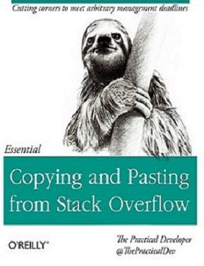
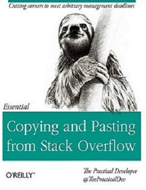

Chapter 3 Stack Overflow Queries
3.1 I am thankful for Stack Overflow
You’ve come through for me in my dark moments of swearing at Tetris, forgetting any and all JavaScript syntax, and more. I dedicate this lesson to all the Stack Overflow contributors who didn’t make me feel like a moron, and to all the new students fixing their bugs one at a time with 26 tabs open.

 

Fake book covers from the Practical Developer, mimicking O’Reilly textbooks
3.2 Stack Exchange Queries
One of the coolest things about learning Data Science and statistics is that we can apply our methods to any dataset that interests us. This is an excellent opportunity for creativity and expression. But it can be difficult to know where to begin; especially because our questions might be too advanced, or difficult to get data for. These lessons approach this problem by analyzing data from Software Engineering research, and guiding the learner through the findings. We also use sources like Stack Overflow, GitHub, and Eclipse (Java IDE) Bug Reports. For this lesson, it’s all about Stack Overflow tags. Stack Overflow is a forum where developers can ask and answer questions about code. There are other features to the site, like gaining reputation and earning badges, but above all else they market the site as “ask questions, get answers, no distractions”. There is certainly a culture to be reckoned with; as some people can be unkind to beginners on the site. But never fear, you are a coder and you belong.
In this lesson we use the Stack Exchange API to get data from Stack Overflow. We use this query to get a .csv file that pulls data from Stack Overflow. We can actually download that file to our local machine and work with the data from there.
3.3 Load Your Libraries
library(kableExtra)
library(ggplot2)
library(dplyr)
library(tm)3.4 Load the Data
The data already exists in the data/stackoverflow folder, but if you download any of your own data from Stack Exchange, you will need to put that csv file in the correct location so that this R code can reach it in the correct path.
data <- read.csv("data/stackoverflow/top10tags.csv")
#this is the same as calling head(data,13) which shows the top 13 rows, but put inside a "kable" which displays it nicely in RMarkdown
kable(head(data,13))%>%
kable_styling(bootstrap_options = c("striped", "hover"))| Month | TagName | X |
|---|---|---|
| 2008-07-01 00:00:00 | c# | 3 |
| 2008-07-01 00:00:00 | html | 1 |
| 2008-08-01 00:00:00 | android | 4 |
| 2008-08-01 00:00:00 | c# | 513 |
| 2008-08-01 00:00:00 | c++ | 164 |
| 2008-08-01 00:00:00 | html | 111 |
| 2008-08-01 00:00:00 | ios | 9 |
| 2008-08-01 00:00:00 | java | 220 |
| 2008-08-01 00:00:00 | javascript | 161 |
| 2008-08-01 00:00:00 | jquery | 28 |
| 2008-08-01 00:00:00 | php | 162 |
| 2008-08-01 00:00:00 | python | 124 |
| 2008-09-01 00:00:00 | android | 9 |
#you can also use the View command to inspect the entire data frame
#View(data)3.5 Summarize the Variables
Here we have the top 10 tags used on StackOverflow over time, with the number of questions containing that tag per month since 2008. Let’s summarize a bit more of what we have by going over each variable and making some tables. This is just a nice way to get yourself situated with the data.
summary(data$TagName)## android c# c++ html ios java
## 133 134 133 134 133 133
## javascript jquery php python
## 133 133 133 133summary(data$X)## Min. 1st Qu. Median Mean 3rd Qu. Max.
## 1 4182 8364 8675 12476 24202kable(tail(data,13))%>%
kable_styling(bootstrap_options = c("striped", "hover"))| Month | TagName | X | |
|---|---|---|---|
| 1320 | 2019-07-01 00:00:00 | jquery | 4129 |
| 1321 | 2019-07-01 00:00:00 | php | 8429 |
| 1322 | 2019-07-01 00:00:00 | python | 23483 |
| 1323 | 2019-08-01 00:00:00 | android | 5262 |
| 1324 | 2019-08-01 00:00:00 | c# | 5679 |
| 1325 | 2019-08-01 00:00:00 | c++ | 2460 |
| 1326 | 2019-08-01 00:00:00 | html | 4397 |
| 1327 | 2019-08-01 00:00:00 | ios | 1820 |
| 1328 | 2019-08-01 00:00:00 | java | 7089 |
| 1329 | 2019-08-01 00:00:00 | javascript | 10873 |
| 1330 | 2019-08-01 00:00:00 | jquery | 2119 |
| 1331 | 2019-08-01 00:00:00 | php | 4748 |
| 1332 | 2019-08-01 00:00:00 | python | 13024 |
3.8 Cumulative Growth Over Time
If we want to get the cumulative sum, we will use dplyr again with the mutate() command. mutate() creates a new column in the dataframe. The cumsum() command refers to cumulative sum, similar to a += in a typical for loop. The last piece of this code is to order the dataframe by the Month. You’ll note that these curves are much smoother than the month to month fluctuations, and that’s because a cumulative sum guarantees that kind of smoothness (and no decreasing is possible).
# total growth over time, holding on to the cumulative sum
cumulative <- data %>%
group_by(TagName) %>%
mutate(csum=cumsum(X)) %>%
arrange(Month)
plt = ggplot(cumulative,aes(Month,csum,group=TagName,color=TagName))+
geom_line(size=1)+
ggtitle("Top 10 Stack Overflow Tags Over Time (Cumulative)")+
theme_bw()+
theme(axis.text.x=element_blank())
plt3.9 Curiouser and Curiouser…
What we see above is cumulative growth curves for each of the top 10 tags on Stack Overflow. Each one seems to follow a similar trend, though with different magnitudes. All except one… the python tag. While the other growth curves appear sigmoidal [LINK TO GLOSS], the python growth looks like it isn’t reaching a plateau in the time period we are looking at. It is more likely that python is still an actively growing area for questions on Stack Overflow, in a different manner than the other tags. In my own mind, it’s easy to look at this plot and think of python as a car trying to rapidly cut across the highway as it changes multiple lanes, while everyone else is trying to mind their own business.
3.10 Time vs. Totals
If we look at the summary, we see that python and php have similar total tagged questions:
kable(summary %>% filter(TagName=="php" | TagName == "python")) %>%
kable_styling(bootstrap_options = c("striped", "hover"))| TagName | sum |
|---|---|
| php | 1301057 |
| python | 1228792 |
But there is more information in looking at the growth over time. Despite the python tag being similar to, and actually less than, the php tag, predictive models might show that python is growing much faster than php. If Stack Overflow were to choose which tags to pay more attention to, in order to help most of its users, which one do you think they ought to choose?
3.11 Kolmogorov-Smirnov what?!
Despite the name of this test sounding like a strong drink, it’s a statistical method tracing back to the 1930s that compares two distributions from possibly different samples. Basically, it is what we can use to compare curves. We look at the difference between the curves, and test if they come from similar data-producing processes.
Let’s set up our null and alternative hypotheses.
Null Hypothesis (H0): There is no significant difference between these curves. They are likely the same pattern.
Alternative Hypothesis (HA): There is a significant difference between these curves. They are likely different patterns.
Remember, the p-value is telling us about the likelihood of the null hypothesis. A low p-value means that the null hypothesis is not likely, and we favor the alternative hypothesis. A high p-value means that the null hypothesis is likely, and we fail to reject the null hypothesis. If the p-value is less than .05, we can reject the null hypothesis.
ks.test(cumulative$csum[cumulative$TagName=='python'],cumulative$csum[cumulative$TagName=='php'])##
## Two-sample Kolmogorov-Smirnov test
##
## data: cumulative$csum[cumulative$TagName == "python"] and cumulative$csum[cumulative$TagName == "php"]
## D = 0.18045, p-value = 0.02631
## alternative hypothesis: two-sidedIn contrast, here is the test between two curves that look roughly similar to the eye. The probability that they are the same is very high.
ks.test(cumulative$csum[cumulative$TagName=='c#'],cumulative$csum[cumulative$TagName=='php'])##
## Two-sample Kolmogorov-Smirnov test
##
## data: cumulative$csum[cumulative$TagName == "c#"] and cumulative$csum[cumulative$TagName == "php"]
## D = 0.061441, p-value = 0.9627
## alternative hypothesis: two-sidedWe don’t have a causal explanation of what is happening with Python, but we can say that something significantly different is occurring with the Python tag than the PHP tag. This is just one example of something you can test on this data.
3.12 Reputation
You can read some official rules on reputation here. Basically, you are aiming for a higher reputation amount (it’s not a ranking, it’s just sheer volume of reputation points). The bigger the better. You gain reputation points by answering questions correctly and asking good questions. The reputation data comes from a query to the Stack Exchange, but the downloaded csv file is in data/stackoverflow. This data has the number of users with a given reputation (excluding very low reputation amounts because there are far too many users with hardly any reputation, and it would make it difficult to visualize the other reputation values).
reps <- read.csv("data/stackoverflow/reputation.csv")
kable(head(reps))%>%
kable_styling(bootstrap_options = c("striped", "hover"))| Reputation | Count |
|---|---|
| 60300 | 1798 |
| 100500 | 482 |
| 140700 | 203 |
| 180900 | 107 |
| 221100 | 57 |
| 261300 | 44 |
plt = ggplot(reps,aes(Reputation,Count))+
geom_bar(stat="identity")+
theme_bw()+
scale_x_continuous(labels = function(x) format(x, scientific = FALSE))
plt3.13 Log-Log Plots and Power Laws, Oh My!
We can see from the above histogram that many people have low reputation, and very few people have high reputation. This is expected, as high reputation is difficult to get and is probably only obtained by a rare few who answer questions all day. But it isn’t just decreasing at one rate; it appears to be exponentially decreasing. If you plot this data on a log-log scale, it would appear to be a decreasing, straight line. Below is an example of a Zipf plot, or power law which shows this relationship. The super funky awesome interesting part is that Zipf’s law occurs all over the place in natural settings. The English language is Zipfianly ditributed, and we see this kind of power-law dropoff in wealth disparities as well. It’s interesting to find it in our own developer backyard, Stack Overflow.
Zipf_plot(reps)## (Intercept) x
## 16.57161 -12.44834plt = ggplot(reps,aes(Reputation,Count))+
geom_point()+
ggtitle("People With X Stack Overflow Reputation (log scale)")+
theme_bw()+
scale_x_continuous(trans='log10',labels = function(x) format(x, scientific = FALSE))+
scale_y_continuous(trans='log10')
plt## Warning: Transformation introduced infinite values in continuous y-axis